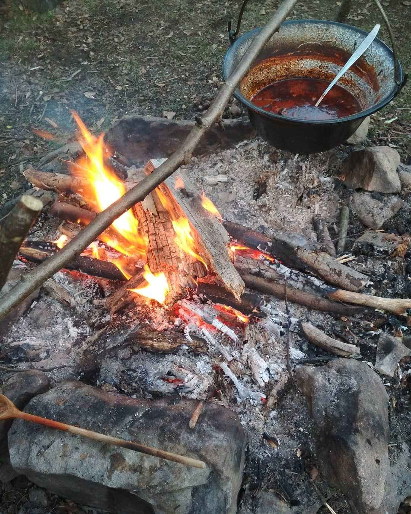

Kotlíkový guláš podľa @tereza.santik.k — Normy Jedál
Kotlíkový guláš z hovězího krku s hlívou a bramborami.🔥🤤
@vendulakoubkova to už je vaření, ne?😁🌶️
.
.
.
#gulas #goulash #kotlikovygulas #ohen #fire #campfire #outdoorcooking #vareninaohni #varenivprirode #nature